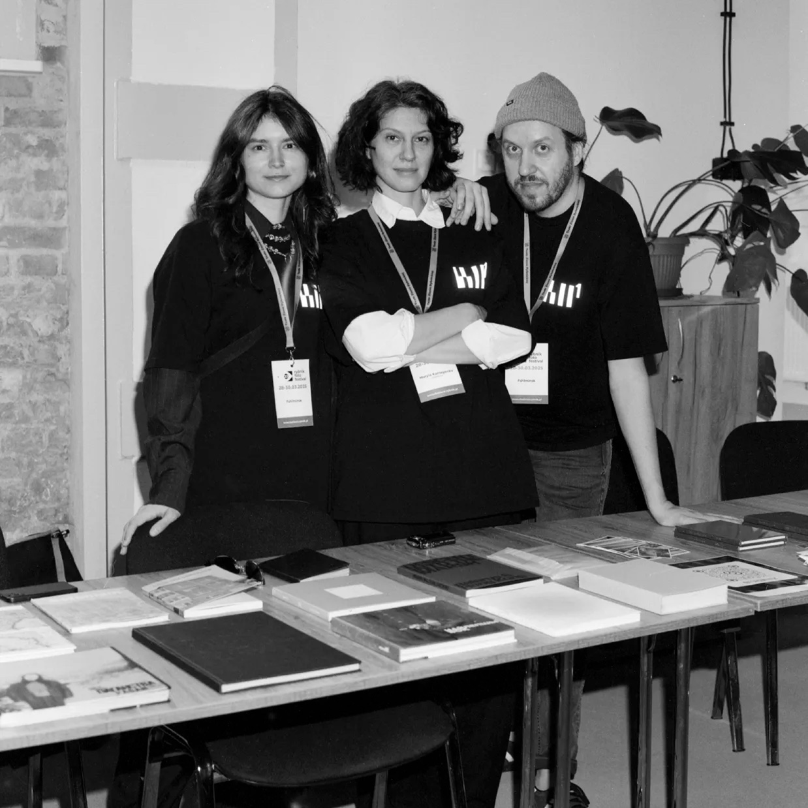

Далягляд – падкаст пра беларускую фатаграфію. Цягам гадзін Кацярына Кузьмічова і Яўген Атцецкі размаўляюць з запрошаным госцяй/госцем пра фатаграфію, творчасць і жыццё. Госці – фатографы, куратары, мастацтвазнаўцы і іншыя дзеячы поля беларускай фатаграфіі.
Пра нас
ФШ1: Беларуская фатаграфічная платформа, асноўная мэта якой – стварэнне прасторы і ўмоў для вольнай творчасці і аб'яднання фатографаў з Беларусі.
Мы займаемся арганізацыяй сустрэч, дыскусій і адукацыйных мерапрыемстваў – лекцый, майстар-класаў, ментарскіх праграм і артыст-токаў.
Будуем супольнасць, дапамагаем аўтарам заявіць пра сябе, наладжваем міжнародныя сувязі.
Мы знаходзімся ў Польшчы, але працуем з беларускімі фатографамі па ўсім свеце.
Нашыя асноўныя праекты
Падкаст
Адным кадрам
У кожным выпуску аўтарка Юлія Ружачка разам з госцяй/госцем абмяркоўваюць адзін фотаздымак беларускага аўтара (як выключэнне – замежнага аўтара, але важны для беларускага кантэкста), прадстаўляюць яго візуальнае апісанне для слухачоў, а таксама кантэкст стварэння іраспаўсюджвання здымка.
Рубрыка ў Instagram
Натхненне ФШ1
Гэта рубрыка, дзе мы паказваем працы фатографаў, якія нас натхняюць. Тут можна ўбачыць праекты беларускіх і замежных аўтараў, якія праз сваю фатаграфію распавядаюць пра сацыяльныя і культурныя пытанні. Кожны праект — гэта гісторыя, якая дапамагае па-новаму паглядзець на свет, зразумець праблемы, з якімі сутыкаюцца розныя людзі.
Бібліятэка ФШ1
Бібліятэка ФШ1 – гэта афлайн-калекцыя арт- і фотакніжак беларускіх аўтараў з адкрытым доступам у Варшаве. Таксама нас цікавяць працы замежнікаў, галоўным фокусам якіх з’яўляецца Беларусь. Мы збіраем фотакніжкі, зіны, аналітычныя тэксты і часопісы пра фатаграфію.
Прастора Duzy Pokój @duzypokoj
Warecka 4/6, Warszawa (уваход з вул. Kubusia Puchatka). Бібліятэку можна наведаць у часы працы выставаў.
Рубрыка ў Instagram
Раімпадпісацца
Мэта рубрыкі #раімпадпісацца – паказаць шырокае прадстаўніцтва таленавітых беларускіх фатографаў у Instagram. У нашых падбоках вы можаце пабачыць як маладых аўтараў, якія толькі падаюць надзеі, так і давсведчаных, ўжо рэалізаваных мастакоў. Гэта можа быць арт ці дакументальнае фота, прамая фатаграфія ці калаж.
Артыст-токі з беларускімі аўтарамі
Артыст-ток гэта публічная сустрэча з беларускімі фатографамі, падчас якой аўтары прадстаўляюць свае праекты, дзеляцца творчым досведам і распавядаюць пра ўласныя падыходы да працы.
Самапрэзентацыя
Самапрэзенатцыя – фармат, у якім аўтар мае 10 хвілін, каб расказаць пра сябе і сваю фатаграфіюі перад аўдыторыяй. Гэта можа быць серыя ці праект, асабісты досьвед, адрэфлексаваны фатаграфічнымі сродкамі, ці нават сумневы. Гледачы задаюць пытанні і удзельнічаюць у дыскусіях.
Фотапрагулка
Фотапрагулка – гэта сустрэча для аматараў фатаграфіі. Мы збіраемся ў кафэ, знаёмімся і ідзем па падрыхтаваным маршруце, здымаем вячэрні горад. Пасля дзелімся здымкамі ў агульным чаце і некаторыя апублікуем на старонцы ФШ1. Шпацыр падыходзіць як пачаткоўцам так і тым, хто працягвае. Галоўная мэта - практыка, натхненне і задавальненне ад здымкі.
Каманда
